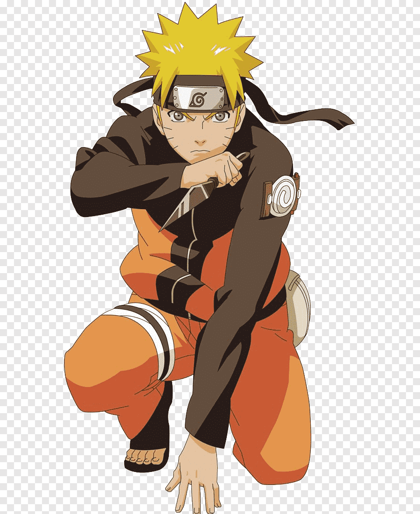

Sobre Naruto
Naruto Uzumaki es un shinobi que nació de un one-shot para convertirse en el ninjas más importante de una generación, en un fenómeno global, en una tendencia de la cultura popular y en el protagonista y cara más visible de un universo millonario que ha trascendido todo tipo de fronteras y formatos. Y sí, todo comenzó con un simple y fracasado adolescente de cabellos rubios que quería ser más fuerte para protegerlos a todos y así finalmente ser reconocido por sus amigos.
Habilidades y técnicas
- Sello del Demonio
- Modo sabio
- Modo Kurama
- Rasengan
- Bola de fuego del Dragón